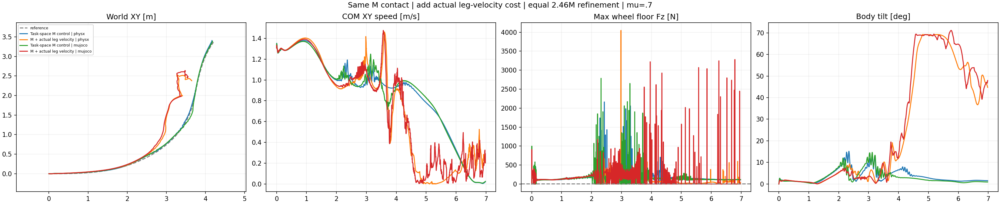

R reduces the measured root high-frequency score but fails path and intended beta tracking, then collapses. It does not complete the stable-contact turning task; no new friction sweep follows.
| Cell | Core XY RMSE (m) | Mean speed/reference | Beta RMSE (deg) | Any-wheel support (%) | Max gap (ms) | HF/original | Failed retained checks |
|---|---|---|---|---|---|---|---|
| Task-space M control | physx | 0.0542 | 0.983 | 3.88 | 94.49 | 65.0 | 0.954 | any_wheel_every_physical_sample, longest_no_support_gap, core_HF_reduction |
| M + actual leg velocity | physx | 0.3259 | 0.970 | 55.07 | 93.63 | 122.5 | 0.364 | core_xy_rmse, core_xy_peak, whole_xy_rmse, whole_xy_peak, core_reference_beta, any_wheel_every_physical_sample, longest_no_support_gap |
| Task-space M control | mujoco | 0.0638 | 0.976 | 5.48 | 90.03 | 65.0 | 0.971 | any_wheel_every_physical_sample, longest_no_support_gap, core_HF_reduction |
| M + actual leg velocity | mujoco | 0.3447 | 0.970 | 58.84 | 48.40 | 355.0 | 0.390 | core_xy_rmse, core_xy_peak, whole_xy_rmse, whole_xy_peak, core_reference_beta, any_wheel_every_physical_sample, longest_no_support_gap |
Core 1.44–4.00 s; support 0.02–6.96 s. All original nine numerical checks remain: core/whole XY RMSE ≤0.15 m and peak ≤0.30 m, core mean-speed ratio 0.95–1.10, intended nonzero beta RMSE ≤10 degrees, core angular-XY10–100Hz RMS ≤0.7 of original same-engine PPO, any-wheel ground-normal force strictly above5N at every actual2.5ms sample, support100% and maximum gap0. One wheel may lift. No absolute-height or geometric-flight failure gate is added. Full-body integrity and the within-turn speed profile matter: a passing mean speed or lower HF while losing the path, collapsing or bearing load after collapse does not establish success.
control_physx. The M control stays upright in the inspected 2.24, 3.00, 4.00 and 6.96 s frames. It follows the reference and settles at the planned stop. This does not erase its native support interruptions or failing high-frequency score.
leg_velocity_physx. R is upright at 2.24 s. At 3.00 s its XY error is 0.397 m and body beta has reversed to +36.9 degrees. At 4.00 s the legs are folded/splayed, XY error is 0.398 m and beta is -136 degrees; measured loading after loss of body integrity is not successful support. At 6.96 s it remains collapsed, with 1.125 m XY error and 45.7 degree torso tilt.
control_mujoco. The M control stays upright in all four inspected frames, follows the path and reaches the planned stop. The 3.00 s frame records zero load on both wheels and 0/8 loaded physical samples, consistent with failing native continuous support.
leg_velocity_mujoco. R is upright at 2.24 s. At 3.00 s XY error reaches 0.443 m and beta is +26 degrees. At 4.00 s the legs have collapsed, beta is -127.9 degrees and only 1/8 physical samples shows any-wheel load. At 6.96 s the body remains collapsed, XY error is 1.102 m, tilt is 46.6 degrees and neither wheel carries measured load.

The native body-contact audit records the first post-initial non-wheel load above5N at3.7925s in PhysX and3.745s in MuJoCo. Whole-overlap peak tilt reaches69.25/71.12degrees. The raw PhysX t=0 force reading is retained separately. Root height is displayed as a measurement, not used as an absolute-height criterion.
raw_R = raw_M - 0.1 * mean over8 physical samples and6 named legs of (dq_leg/(1rad/s))^2 reward-manager contribution = 0.02s * 0.4 * raw_R
The added cost is ungated and uses actual joint velocities after each native scene update. Both wheel joints are excluded by their names, including when native joint order differs. This penalizes motion amplitude as well as chatter; it is not a frequency-selective filter. No filter changes actions, observations or physics. The frozen M contact formula, continuous load-margin coefficient4, force threshold, positive reference-beta support bonus, all15 reward weights and other14 reward definitions stay unchanged. The four free-intermediate-leg task-space objectives, beta+2, action-rate−0.5, free absolute height, held targets, PD500/10, motor limits, rigid cylinders and original DR are identical across the pair.
R subclasses the immutable M lifecycle. The same single owner records eight synchronized force/velocity samples, rejects incomplete physical windows and preserves reset handling. Duplicate scene refreshes and repeated reward reads add no samples or statistics. Invalid leg measurements poison the environment reward and latch a health failure. The composite cost is applied once per50Hz reward window, not eight times. Native startup/final velocity sample counts and finite-health flags are verified before export.
The control is the completed task-space M actor, not the original shorter-budget K policy. Both M and R independently load the same original K checkpoint8cb011e4c5e2a33a685bc58280df410141ab99aa245892042762b8956595fe5a with bit-identical actor, critic and normalizers, retain their12,288,000 initial normalization samples, reset Adam moments and use fixed learning-rate0.0001/clip0.1. Each adds512×24×200=2,457,600 transitions, giving14,745,600 cumulative transitions. This is conservative warm adaptation, not from-scratch training. The result does not establish that a fresh policy with these objectives cannot learn the task.
Both actors are PhysX-trained. Each uses one fixed actor across native PhysX and native CPU MuJoCo validation atmu0.7, no DR/noise, identical observable initial states and a full6.98s horizon without hidden resets. Closed-loop transfer includes changing observations and actions; no solver-only attribution is claimed. Training frictionDR[0.3,1.2], encoder bias, COM perturbations and pushes retain the frozen recipe.
63 CPU tests and38 subtests pass, including reordered wheel-spin exclusion, non-endpoint velocity samples, reset isolation, duplicate reads, invalid-state propagation and NumPy/Torch/runtime parity. The native smoke passed before the complete refinement; both exported checkpoints passed independent CPU tensor/normalizer equality and FP32 export checks. The collection rehashes actual final neural files on the execution host but excludes weights, assets, credentials and native libraries.
All350 video frames decode, all four native traces are recomputed and policy identities/cameras verified. Stills2.24/3.00/4.00/6.96s were inspected; full manual playback is not claimed. Actual native poses use opaque meshes, one common fixed relative camera distance, fixed world angles and translation-only following, with shared-scale world XY. No pose/height/contact correction is applied. All owned compute is terminal.
Metrics and policy proofs · Collected evidence hashes · Whole-horizon body contact · Replay verification · Still review · CPU tests.
Protocol · Arithmetic · Native collector · Trainer · Strict verifier · Native evaluator · Analyzer · Renderer. Exact existing dependency/asset paths and invocation arguments remain in the collected launch records.